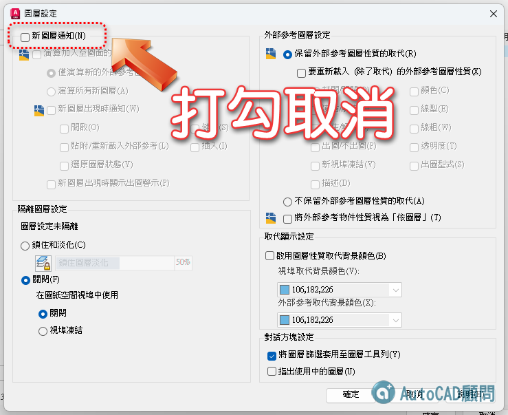
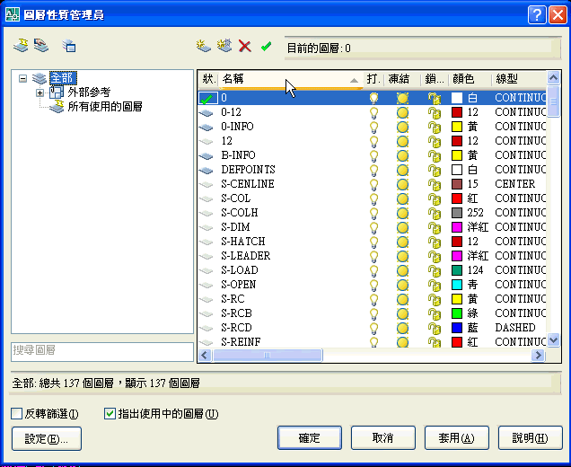
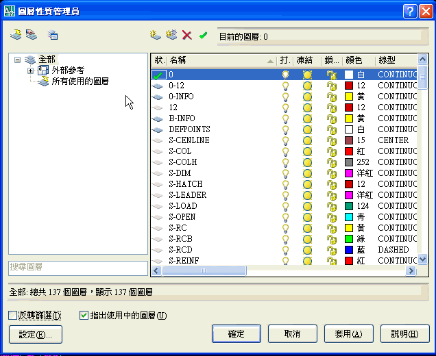
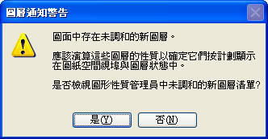
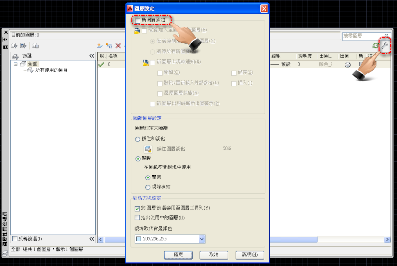

Q1、插入母圖之後，在子圖中總是會出現「未調和的圖層」怎麼用也用不掉，如不管它，就無法出圖，於是我只好使用併入，可是一旦併入後，母圖更動，子圖就沒有反應了，有什麼方式可以解決，而且到底是什麼情況下會出現「未調和的圖層」？
Q2、使用外部參考後，圖層會突然爆增，有什麼方法可以隔離或刪除這些圖層？
A1.可以輸入 LAYEREVAL系統變數 設定為 0 來關閉，但要出圖時要注意 外部參考圖層 開關(凍結)。
若開圖時保有 新圖層的警示，可以在使用 LAYERNOTIFY系統變數 設定為 14 ，這樣出圖時就不會 出現「未調和的圖層」。
👇建議打勾取消即可忽略「未調和的新圖層」通知

A2.這個問題是無法避免的，但是外部參考檔的圖層會自己形成一個 群組，你選擇 外部參考檔圖層群組 再使用 反轉篩選即可，這樣他會把所有外部參考的圖層過濾掉，這樣一來就不會有 圖層會突然爆增 的困擾了。

PS:也可以使用 新群組篩選；建立圖層篩選，其中包含選取和加入至篩選的圖層。可以加入目前工作時會用到的圖層 就更簡便了。

※「未調和的圖層」是 2008版本的新功能之一，但是由於 大部分的使用者 沒有很清楚的了解外部參考的正確使用方法，所以原廠注意到這件事情，才會有此「未調和的圖層」提示訊息，但就如我所說的在還沒有擁有正確的觀念，原廠的美意就變成會造成使用者的困擾.....
※在此特別舉例說明一下:
a.X-01.DWG 為外部參考底圖；圖面中有 01~10 十個圖層。L-01.DWG 為配置子圖。
b.開啟 L-01.DWG(子圖) 使用 外部參考XREF指令，參考 X-01.DWG(底圖)，完成 參考連結關係。
c.在 L-01.DWG(子圖) 的外部參考檔(X-01.DWG)，開啟圖層性質管理員，將外部參考檔(X-01.DWG)的 01~05 圖層 凍結，也就是說希望在 L-01.DWG 只看見 外部參考檔(X-01.DWG) 的 06~010 圖層。而出圖時就只要出現 06~010 圖層，01~05 圖層 為參考資訊 不能出圖。
d.當在 X-01.DWG(底圖) 改圖時，新增了 11~13 三個圖層，存檔後關閉。
e.開啟 L-01.DWG(子圖) 時，圖檔會偵測到 X-01.DWG(底圖) 的圖層有新增，會出現 新圖層通知 訊息提示:
f.出圖時也會有系統提示你是否要處理的訊息:

g.因為 在 L-01.DWG(子圖) 只能出圖 X-01.DWG(底圖) 的 06~010 圖層，而 01~05 圖層 已凍結，但是 11~13 圖層 未被 凍結處理，所以在 在 L-01.DWG(子圖) 出圖時 會出現 11~13 圖層，這樣就會造成 不該出現的圖面資訊 被出圖了。
h.所以「未調和的圖層」的通知，可以在 L-01.DWG(子圖) 再將 X-01.DWG(底圖) 的 11~13 圖層 凍結，這樣即可保有 L-01.DWG(子圖) 圖面的正確性。
PS:早期使用舊版本時都要很小心使用 外部參考檔的圖層，也要記得到 配置子圖 的圖層控制開關，所以原廠才有 新圖層的警示「未調和的圖層」。
註：通常我會建議關掉「未調和圖層通知」忽略即可。
